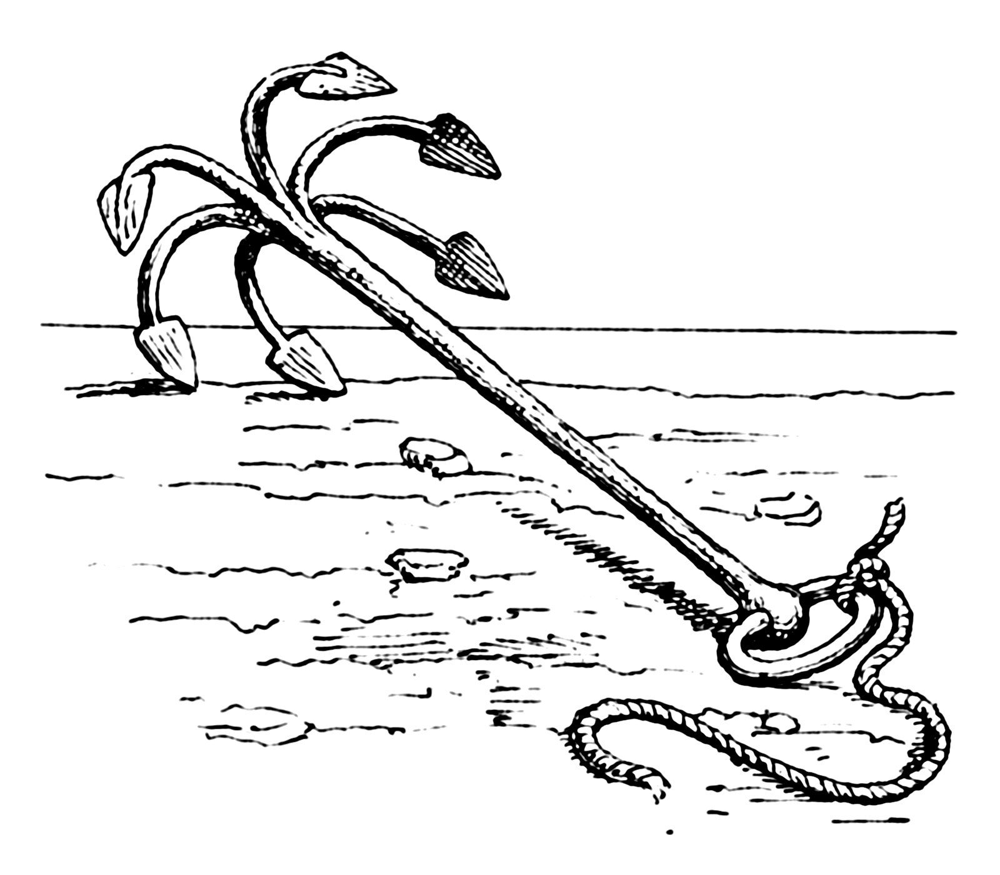
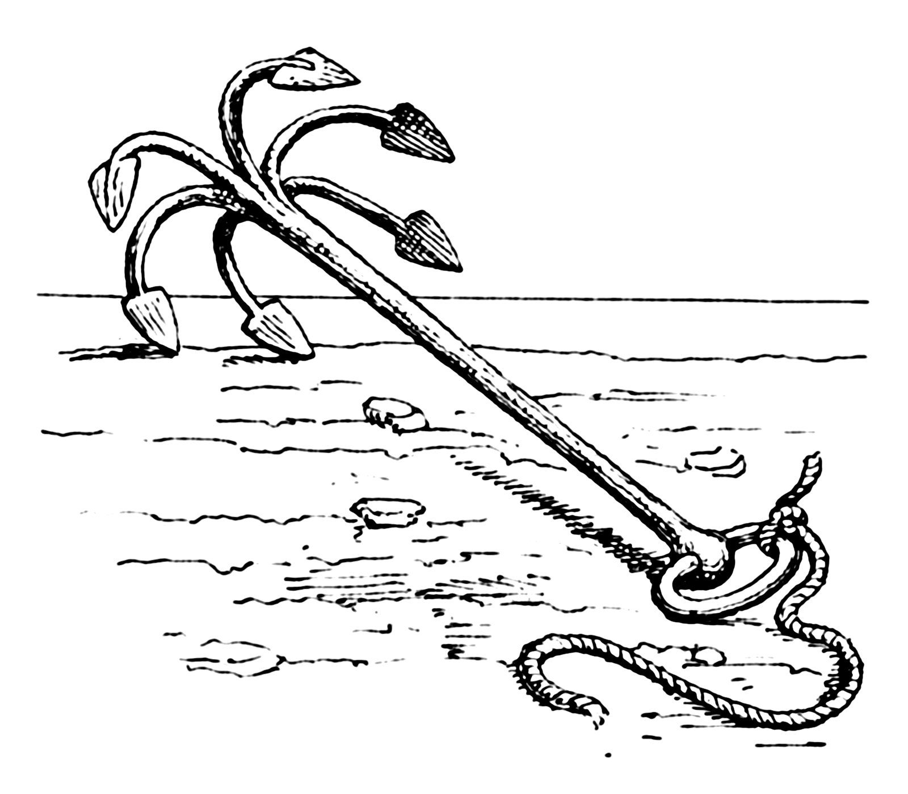

Ori Mushi

Une aide de jeu pour le scénario d’initiation au jeu de rôle issu de “Mener en 30min” par Kalwrynn.
-
Version PDF: v0.1 (11,3 Mo)
-
Article de blog présentant le contexte : Faire découvrir le JdR
Inspirations: Okami, Ori & the blind forest, Mushishi, Usagi Yojimbo, Kung Fu Panda, princesse Mononoke, Naruto…
Matériel
S’inspirant de Sventovia du Grümph, cette aide de jeu propose d’imprimer des éléments au préalable, pour faciliter l’immersion des joueurs : des illustrations de personnages et des élements d’équipements (items).
Création de personnage en 5min
- Choisissez votre apparence & 2 Items spéciaux (arme / armure, sort, objets unique…) parmi les illustrations, ou inventez-le & décrivez-les sur des morceaux de papier
Note: le cercle magique et le parchemin permettent tous deux de faire appel à de la magie. Lorsqu’un joueur en choisit un, il doit définir le type de magie qu’il maîtrise. Voici quelques exemples : le feu, la terre, le métal, l’eau, la foudre, le vent, la lumière, la dissimulation, le déplacement instantané, les illusions…
- Complétez sur votre feuille de personnage : nom, activité et sélectionnez 3 Traits dans la liste
Voici quelques suggestions d’activité si les joueurs sont en panne d’inspiration : apothicaire, conteur, Ronin (samouraï sans maître), marchant, Mushishi (dompteur d’esprits de la nature)…
Système de jets de dés
1d6 +1 par Trait / Item applicable. Selon le meilleure résultat obtenu :
⚅: réussite épique / parfaite, la joueuse décrit la scène⚄: oui mais…⚃: non mais…⚂/⚁/⚀: c’est raté !

Éléments clefs à établir en début de partie
- « L’histoire se déroule dans le japon médiéval des contes & légendes. Il existe de la magie et des monstres. »
- Le meneur de jeu peut demander des jets aux joueurs pour certaines actions qui peuvent mal tourner.
- Les joueurs se connaissent déjà et voyagent ensemble. Ils ont déjà traversé de nombreuses contrées et aidé bien des gens.
Scène 0 - Course poursuite !
Même si cela rallonge un peu la durée de jeu, je trouve très judicieuse l’idée de Kalwrynn de commencer in media res.
Je vous suggère donc de commencer la partie en décrivant rapidement un joli décor de chemin de terre sinuant parmi les champs et les herbes folles, par une paisible après-midi printanière, au pied d’une montagne… Où les personnages des joueurs descendent le chemin en pente à perdre haleine, poursuivis par un troll-kappa dont ils ont piétinés le jardin par mégarde ! Cette créature, sorte de taupe humanoïde avec un bec, est fâchée et pas du tout disposée à discuter !
Décrivez aux joueurs les environs pour leurs donner quelques idées d’échappatoire : l’orée de la forêt de bambous, la descente un peu raide vers un lac, les hautes herbes balayées par le vent…
Au terme de cette scène, les joueurs doivent rejoindre le village, par le chemin ou le lac, quitte à faire une ellipse ou à leur indiquer qu’il s’agit de leur prochaine étape de leur voyage, dont on leur a vanté une recette locale de poisson frit…
Traits
- Agile comme un singe
- Disciple du Kung fu
- Discret comme une ombre
- Entend le chant des plantes
- Fort comme un tigre
- Parle aux poissons
- Rapide comme l'eclair
- Sait les contes & legendes


Illustrations
Dans l’ordre, vous trouverez ci-dessous 9 illustrations de personnages des joueurs, une du doyen du village, une du troll-kappa, 8 de différents items, et enfin une illustration de l’esprit-dragon.


 
 


Licence & sources

Cette aide de jeu Ori Mushi a été conçue par Lucas Cimon en février 2020. Elle est sous license Creative Commons Attribution 4.0 International.
Logiciels employés pour la réaliser : Firefox, Gimp, Notepad++, Sumatra PDF, Python, puppeeter
Polices : Odachi & Xangda Shiny - Illustrations :
Personnages des joueurs :
- Pirate Ninja @ publicdomainvectors.org
- Quick samurai sketch par hidanbasher - CC BY 3.0
- Human 4 par Jeff Preston, issu de 108 Terrible Character Portraits - CC BY 3.0
- Chinese Zodiac Rabbit par TysonTan - CC BY-SA 3.0
- Breeze in the Forest par TysonTan - CC BY-SA 3.0
- Alopex redesign concept par BEEvirus - CC BY-NC-SA 3.0
- Human Alopex par BEEvirus - CC BY-NC-SA 3.0
- Kitty Anime Poilu Bleu @ pixabay.com
- Elf Druide Fantaisie @ pixabay.com
Personnages non joueurs :
- Dakuan Ninja Scroll par DaudioMultimedia - CC BY-NC 3.0
- Manimal 3 par Jeff Preston, issu de 108 Terrible Character Portraits - CC BY 3.0
- Woodland dragon par flaming-anubis - CC BY-SA 3.0
Items :
- magic circle 2 par NNao - CC BY-NC-SA 3.0
- Western kit par Fernand0FC - CC BY 3.0
- Grapling hook par Pearson Scott Foresman - domaine public
- Katanas par Halibutt - CC BY 3.0
- Ombrelle @ pxhere.com - CC0
- Armored 3 par Jeff Preston, issu de 108 Terrible Character Portraits - CC BY 3.0
- Asian fan with a map @ freesvg.org - domaine public
- Shuriken Throwing Ninja Star @ pixabay.com
- Red Chinese scroll @ freesvg.org - domaine public
- Bow and arrow vector drawing @ publicdomainvectors.org - domaine public
.png){kind=link}
{kind=link}
Feuille de personnage :
- Chinese New Year Folk Ornament @ freesvg.org - domaine public
- Decorative Ying Yang sign @ freesvg.org - domaine public
- Dragon frame @ freesvg.org - domaine public
{{version}}